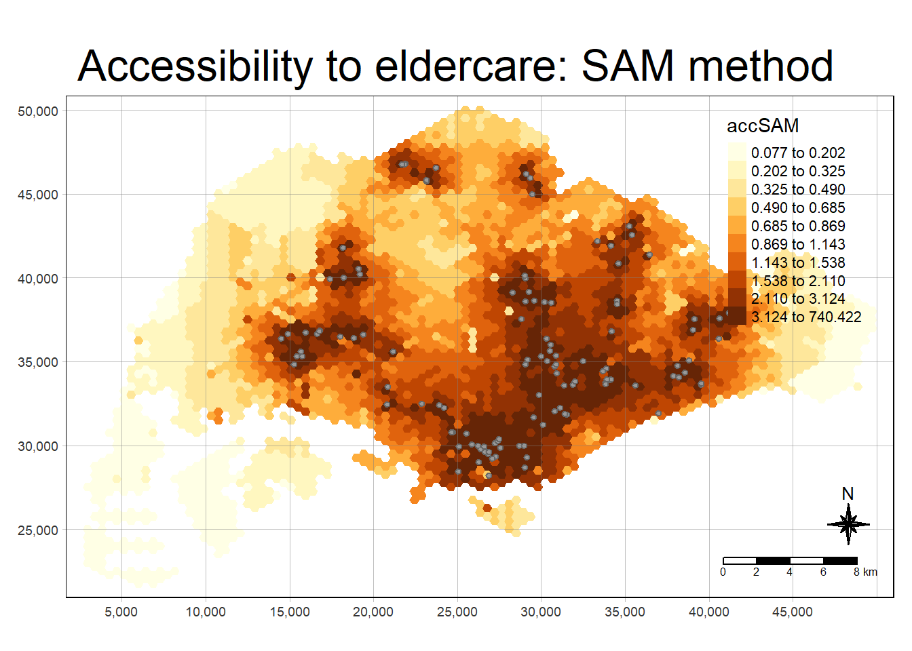

pacman::p_load(tmap, SpatialAcc, sf,
ggstatsplot, reshape2,
tidyverse)Hands-on Exercise 10: Modelling Geographic of Accessibility
1.0 Introduction
1.1 Getting Started
In this hands-on exercise, we will learn how to model geographically accessibility.
1.2 Overview
1.3 Installing and loading R packages
2.0 Data Acquisition
3.0 Geospatial and Aspatial Data Handling
We will be using the st_read() from sf package to import the data into RStudio.
3.1 Importing Geospatial Data
We will import this data into the R environment using the st_read() function of sf.
mpsz <- st_read(dsn = "data/geospatial",
layer = "MP14_SUBZONE_NO_SEA_PL")Reading layer `MP14_SUBZONE_NO_SEA_PL' from data source
`C:\kt526\IS415-GAA\Hands-on_Ex\Hands-on_Ex10\data\geospatial'
using driver `ESRI Shapefile'
Simple feature collection with 323 features and 15 fields
Geometry type: MULTIPOLYGON
Dimension: XY
Bounding box: xmin: 2667.538 ymin: 15748.72 xmax: 56396.44 ymax: 50256.33
Projected CRS: SVY21hexagons <- st_read(dsn = "data/geospatial",
layer = "hexagons") Reading layer `hexagons' from data source
`C:\kt526\IS415-GAA\Hands-on_Ex\Hands-on_Ex10\data\geospatial'
using driver `ESRI Shapefile'
Simple feature collection with 3125 features and 6 fields
Geometry type: POLYGON
Dimension: XY
Bounding box: xmin: 2667.538 ymin: 21506.33 xmax: 50010.26 ymax: 50256.33
Projected CRS: SVY21 / Singapore TMeldercare <- st_read(dsn = "data/geospatial",
layer = "ELDERCARE") Reading layer `ELDERCARE' from data source
`C:\kt526\IS415-GAA\Hands-on_Ex\Hands-on_Ex10\data\geospatial'
using driver `ESRI Shapefile'
Simple feature collection with 120 features and 19 fields
Geometry type: POINT
Dimension: XY
Bounding box: xmin: 14481.92 ymin: 28218.43 xmax: 41665.14 ymax: 46804.9
Projected CRS: SVY21 / Singapore TMUpdating CRS information
mpsz <- st_transform(mpsz, 3414)
eldercare <- st_transform(eldercare, 3414)
hexagons <- st_transform(hexagons, 3414)Extracting relevant fields
eldercare <- eldercare %>%
select(fid, ADDRESSPOS) %>%
mutate(capacity = 100)
hexagons <- hexagons %>%
select(fid) %>%
mutate(demand = 100)3.2 Importing Aspatial Data
The OD_Matrix.csv file is in .csv format. We will be import it using read_csv function of readr package.
ODMatrix <- read_csv("data/aspatial/OD_Matrix.csv", skip = 0)Tidying the distance matrix
distmat <- ODMatrix %>%
select(origin_id, destination_id, total_cost) %>%
spread(destination_id, total_cost)%>%
select(c(-c('origin_id')))
distmat_km <- as.matrix(distmat/1000)4.0 Modelling and Visualising Accessibility using Hansen Method
4.1 Modelling Hansen’s accessibility
acc_Hansen <- data.frame(ac(hexagons$demand,
eldercare$capacity,
distmat_km,
#d0 = 50,
power = 2,
family = "Hansen"))
colnames(acc_Hansen) <- "accHansen"
acc_Hansen <- as_tibble(acc_Hansen)
hexagon_Hansen <- bind_cols(hexagons, acc_Hansen)4.2 Visualising Hansen’s accessibility
4.2.1 High cartographic quality accessibility map
mapex <- st_bbox(hexagons)
tmap_mode("plot")
tm_shape(hexagon_Hansen,
bbox = mapex) +
tm_fill(col = "accHansen",
n = 10,
style = "quantile",
border.col = "black",
border.lwd = 1) +
tm_shape(eldercare) +
tm_symbols(size = 0.1) +
tm_layout(main.title = "Accessibility to eldercare: Hansen method",
main.title.position = "center",
main.title.size = 2,
legend.outside = FALSE,
legend.height = 0.45,
legend.width = 3.0,
legend.format = list(digits = 6),
legend.position = c("right", "top"),
frame = TRUE) +
tm_compass(type="8star", size = 2) +
tm_scale_bar(width = 0.15) +
tm_grid(lwd = 0.1, alpha = 0.5)
4.2.2 Statistical graphical visualisation
The statistical graphical visualisation is used to compare the distribution of Hansen’s accessibility values by URA Planning Region.
hexagon_Hansen <- st_join(hexagon_Hansen, mpsz,
join = st_intersects)
ggplot(data=hexagon_Hansen,
aes(y = log(accHansen),
x= REGION_N)) +
geom_boxplot() +
geom_point(stat="summary",
fun.y="mean",
colour ="red",
size=2)
5.0 Modelling and Visualising Accessibility using KD2SFCA Method
5.1 Modelling KD2SFCA’s accessibility
acc_KD2SFCA <- data.frame(ac(hexagons$demand,
eldercare$capacity,
distmat_km,
d0 = 50,
power = 2,
family = "KD2SFCA"))
colnames(acc_KD2SFCA) <- "accKD2SFCA"
acc_KD2SFCA <- tbl_df(acc_KD2SFCA)
hexagon_KD2SFCA <- bind_cols(hexagons, acc_KD2SFCA)5.2 Visualising KD2SFCA’s accessibility
5.2.1 High cartographic quality accessibility map
tmap_mode("plot")
tm_shape(hexagon_KD2SFCA,
bbox = mapex) +
tm_fill(col = "accKD2SFCA",
n = 10,
style = "quantile",
border.col = "black",
border.lwd = 1) +
tm_shape(eldercare) +
tm_symbols(size = 0.1) +
tm_layout(main.title = "Accessibility to eldercare: KD2SFCA method",
main.title.position = "center",
main.title.size = 2,
legend.outside = FALSE,
legend.height = 0.45,
legend.width = 3.0,
legend.format = list(digits = 6),
legend.position = c("right", "top"),
frame = TRUE) +
tm_compass(type="8star", size = 2) +
tm_scale_bar(width = 0.15) +
tm_grid(lwd = 0.1, alpha = 0.5)
6.2.2 Statistical graphical visualisation
hexagon_KD2SFCA <- st_join(hexagon_KD2SFCA, mpsz,
join = st_intersects)
ggplot(data=hexagon_KD2SFCA,
aes(y = accKD2SFCA,
x= REGION_N)) +
geom_boxplot() +
geom_point(stat="summary",
fun.y="mean",
colour ="red",
size=2)
6.0 Modelling and Visualising Accessibility using Spatial Accessibility Measure (SAM) method
6.1 Modelling SAM accessibility
acc_SAM <- data.frame(ac(hexagons$demand,
eldercare$capacity,
distmat_km,
d0 = 50,
power = 2,
family = "SAM"))
colnames(acc_SAM) <- "accSAM"
acc_SAM <- tbl_df(acc_SAM)
hexagon_SAM <- bind_cols(hexagons, acc_SAM)6.2 Visualising SAM accessibility
6.2.1 High cartographic quality accessibility map
tmap_mode("plot")
tm_shape(hexagon_SAM,
bbox = mapex) +
tm_fill(col = "accSAM",
n = 10,
style = "quantile",
border.col = "black",
border.lwd = 1) +
tm_shape(eldercare) +
tm_symbols(size = 0.1) +
tm_layout(main.title = "Accessibility to eldercare: SAM method",
main.title.position = "center",
main.title.size = 2,
legend.outside = FALSE,
legend.height = 0.45,
legend.width = 3.0,
legend.format = list(digits = 3),
legend.position = c("right", "top"),
frame = TRUE) +
tm_compass(type="8star", size = 2) +
tm_scale_bar(width = 0.15) +
tm_grid(lwd = 0.1, alpha = 0.5)
6.2.2 Statistical graphical visualisation
hexagon_SAM <- st_join(hexagon_SAM, mpsz,
join = st_intersects)
ggplot(data=hexagon_SAM,
aes(y = accSAM,
x= REGION_N)) +
geom_boxplot() +
geom_point(stat="summary",
fun.y="mean",
colour ="red",
size=2)